Беседа 816 от 3877 · Беинса Дуно
Образи на живата природа
''Лекция от Учителя, държана на 24 декември, 1924 г.''
Има известни определени епохи, които не съответствуват на епохите на природата.
Процесът на узряването зависи от енергиите на живота. Там, дето има повече живот, има повече топлина. Ние казваме: Дето има топлина, там има живот. Сега ще кажем: Топлината излиза от живота. Там, дето има живот, винаги се явява топлина. Когато една мравка се покачи по крака на един човек, тя ще каже: „Колко е топъл този крак.“ Пък то е крака на едно разумно същество. Тъй и вие някой път, като почувствувате топлина, то е топлината на някое по-висше същество. Колкото по-мъчно може да се извади топлината от едно тяло, толкова по-висше съзнание има това тяло. Ако у мен съзнанието е будно, с никого няма да дойда в стълкновение; пък щом съзнанието ми не е будно, винаги ще има пречки на пътя ми. Понякога детето казва: „Мама не ми дава хляб.“ Това е неговото заключение. Ти не знаеш какво е нейното разположение. Когато детето каже, че майка му не иска да му даде хляб, трябва да се разбира, че няма условия сега, външни препятствия има, а може детето да има развален стомах.
Случва се някога, ставаш сутрин, неразположен си. На какво се дължи това неразположение? Първо ще видиш от какво може да си неразположен. Вечерта си легнал весел, радостен, а сутринта ставаш неразположен. Това неразположение вече не е твое и може да се дължи на това, че като си бил много разположен и весел, ти си влязъл във връзка с много хора по лицето на земята. И те казват: „Ти си ял много, ама не помисли ли да оставиш малко за нас от яденето.“ И туй неразположение, то е упрекът, който идва от другите хора, но ти не знаеш коя е причината. Когато дойдем до съзнателния живот, ние трябва да се пазим, да не внесем някаква дисхармония в съзнанието на по-висшите същества, нито в съзнанието на Бога; не да застанем пред лицето на Бога и да викаме, и да плачем, да се оплакваме. Ти ще изнесеш фактите, както са си, и ще оставиш въпроса, той сам по себе си ще се разреши, а другото, което може да направи човек, е излишно. Ти просто разкопай, посей и плода ще дойде сам по себе си. Съмнението знаеш откъде произтича.
Имам една счупена стомна, не знаех, че е счупена, налях вода, тя изтече. Такъв е пропуканият живот, колкото и да наливаш, ще изтече. От здравата стомна не изтича. Значи здравите, постоянните неща в живота, неща, които са хармонични, в тях промяна не може да има. Промени не може да има, но прояви може да има. Някои разбират, че да се прояви човек, значи да се измени. Не, ще определя какво е проява. Имате един хубав извор, а пред него канара, изворът не може да се прояви. Пробивате дупка в канарата и водата изтича навън. Питам: Качеството на водата ще се измени ли? Не, тя ще се прояви такава, каквато е. А под промяна всякога се разбира в състава на нещата. Тогава как ще се означи промяната - към добро или към лошо отива? Например човек е болен, промяна става към добро, той оздравява; или промяна става към лошо. После има промяна в кабинета; политически промени стават. Всяка една мисъл, която временно има надмощие, тя е министър-председател, а другите мисли заедно с нея, те са обикновени министри. Самият човек, това е царят, който е несменяем. Той е по право назначен.
(Сестра Сийка: В съвременната психология не става дума за промяна, а за смяна на състоянията на едно моментно единство с друго или пък смяна на особеностите, на определеностите.) - Как определяте в психологията тия смени на състоянията? (Сестра Сийка: [(Г1, Ф1, Ц1, М1) (Г2, Ф2 Ц2, М2) (---) (---) (---) = А. Това е формулата на вещта А в различните й моментни единства, в които тя се намира; в малките скоби имаме (---) (---) разните определености и техните особености: 1, 2 - големина, форма, цвят, място и т. н. Всичкото в малката скоба представлява едно мольентно единство, което трае дотогава, докато дойдат други особености 3, 4 и пр. Много такива моментни единства, взети последователно, образуват вещта, а отделните моментни единства представляват смяна на състоянията.)
Ако се разложи човекът психологически, ще се види, че у него има (в черепа му) 40 главни способности, разделени в следните седем области. И тогава аз ще ви дам формулата: А = 40/7.
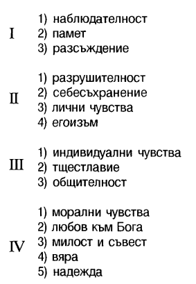 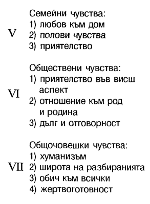
И един човек, у когото егоизъмът и разсъдъкът са развити, ще разреши по трети начин въпроса. Някой път ще ви направя една много подробна френологична схема и ще ви обясня как психологията на човека се намесва при различните случаи, за да се отговори така или иначе на един въпрос; това френологията вече е разрешила. Постъпките на човека се дължат на известно негово разположение или неразположение да извърши нещо или не. А у всеки човек разположението се определя според чувствата, които вземат надмощие. И тогава казваме: Характерът на този човек е такъв, понеже разрушителността е силно развита у него. Друг е тих и спокоен, не се кара, не че съзнанието му е такова, но тези органи не са развити у него. Не че той е добродетелен, но лошите, разрушителните органи не са развити чрезмерно в него; има други чувства, които го карат да се прояви в друга насока. За пример, ако дойдем до личните чувства, те действуват за благото на твоето тяло. Всеки мисли за тялото си, всеки казва: „Няма да се оставя да ме изядат.“ Това е личното в човека.
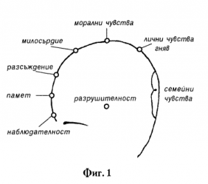
Когато човек започне усилено да работи в известно направление, съответната област от неговия череп се изменя. Значи пълното концентриране на ума в известна посока произвежда резултати. Щом се разработи известна област, веднага се забелязва една промяна. Значи една разумна сила вече работи отвътре.
Това, което за нас е идейно, Божествено, то е нещо материално. Нашите мисли, които са отвлечени неща, във висшите светове са толкова гъсти, че на тях може да се посади лук, чесън и те да растат. В човека има две висши състояния. Те са причинното тяло и после идва будическото съзнание. Тези последни две области някои ги наричат безформени; не че те са безформени, но формите са толкова далеч, че нищо не се вижда, вижда се само една необятна светлина.
Ако вие правите наблюдения над себе си, ще видите къде е съсредоточена най-много вашата мисъл. Щом сте разсърдени, вие ще почувствувате едно напрежение зад ушите си; ако ви засегнат много лично, вие ще усетите едно сгорегцяване отзад на главата - горе. Ако нещо ви засегнат религиозното чувство, ще усетите на върха на главата едно напрежение, като че има някакво подуване. Когато мисълта е силна, напрежението е голямо на челото. Ако приемем теориите на съвременните учени, ще видим, че човек е минал през 400 000 фази на развитие. Значи той е бил облечен в 400 000 форми. И днес ние виждаме какъв е сегашният му образ. Питам: Като виждаш всичките тия форми, видял ли си човека? Най-напред го виждаш в такъв образ 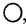 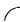 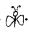
Щом известно същество няма тяло, то не е висше. Всички висши същества имат тела. Най-първо ще почувствувате, че имате душа, че има на какво да се осланяте. И това е същественото, което ви отличава. И щом казвате „Имам душа“, вие сте вече във въздуха. Душа, дух, ум и сърце - това са положения, които определят човека. Все трябва да имате нещо свое, за да сте човек. Ще бъдете или в света на сърцето, или в света на ума, или в света на душата, или в света на духа. В четири свята може да бъдете. Може на физическото поле да нямате нищо, но във висшите светове трябва да имате нещо. Страдате, то е реално; радвате се, то е реално. Защото какво седи в скръбта, ако нямате скръб, и какво седи в радостта, ако нямате радост. Зад скръбта и зад радостта седи мирът.
Естествените неща в живота са чувствата. Мислите са нещо реално. Но не всякога това, което виждате, е реално, а още повече това, което мислите. Защото нещата, които обичате, ги виждате, а които не обичате, не ги виждате. И това, което обичате, него знаете повече, а това, което не обичате, за него знаете по-малко. Вземете онзи пианист, който познава всичките клавиши, ноти, музикални инструменти, знае техните марки и цени. А този, който не обича музиката, него не го интересуват нито ноти, нито музика.
Анализ не значи чоплене. Щом дойдете до нещо съществено, гама да го чоплите. Като събудите семенцето, гама да го чоплите, защото тогава неговите енергии изтичат и то не може да расте. Анализът е съпоставяне на нещата, които образуват външната страна. Съпоставянето на чувствата е пак анализ - изпитваш ги, съпоставяш ги.
Колкото повече явления се обясняват с една теория, толкова тя е по-вярна. Пък щом всички явления не могат да се изяснят, тогава тя е невярна. (Според философията на Ремке всичкото познание е само анализ, синтез няма в света. Всичко, което става за обект за разглеждане от учените, не се създава сега чрез синтез, то си е тъй дадено готово и човек го изследва, изучава само с анализ. Човек нищо не създава - синтез въобще няма - всичко, което човек намира, то е дадено и човек го изучава, изследва само посредством анализ.)
Има синтез и анализ. В живота има повече синтез, отколкото хората мислят. В живота има смърт и душа. Всичко има в света и нищо няма. Има и душа, има и без душа. Но какъв ще бъде този живот без душа. Значи има живот с душа, има и живот без душа. Живот без душа е страдание, а живот с душа е радост. Единият живот без дух е мъчение, а другият с дух е блаженство. Всеки един човек все чувствува, че му липсва нещо. Ти скърбиш, че си изгубил нещо, и се радваш, че си придобил нещо, а то може да не го виждаш даже какво е, но се радваш. Тази радост е обоснована от нещо. Ти излезеш, видиш слънцето, зарадваш се, в душата ти като че е слънцето. Ти слънцето не си видял, но си придобил нещо от него и целия ден се радваш. А слънцето върви и си отива по пътя, но на тебе ти е дало нещо, дало ти е подарък. - „Добър ден!“ - ето, това е от Баща ти. И целия ден ти мислиш за подаръка си, за слънцето, което ти донесе нещо.
Има различни отношения в живота на човека. На себе си ще говориш на свой език, а на хората ще говориш на техния език, с преводчици. Какво ще говориш на жабата, когато е в блатото? Срещна един рак - какво да му говоря? Че е крив? Срещна един паяк - какво да му разправям, че трябва да ходи на два крака? От това гледище има неща, които не трябва да обясняваме на хората, а да ги оставим в тяхното заблуждение. На тези хора съзнанието им е пълно, ти виждаш, че не може да влезе нищо ново; ти трябва да му оттулиш нещо, да го изпразниш, за да може после да му налееш нещо ново. И затова говори му сега само за неговите работи. Че е пълно неговото съзнание се вижда от това, че е мързелив, наслояване става и той не мисли вече за повече. Казва си: „Да не стане много за мен.“
(Кажете ни нещо за доброто, понеже днес е празникът на доброто за Сотирка.) - В доброто има разграничение на силите, които действуват.
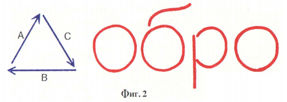
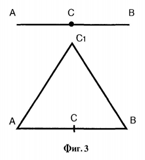
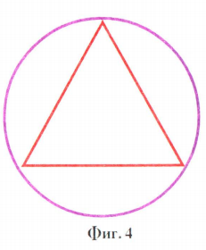 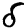 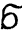 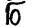 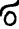 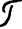 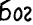 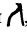 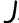 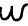 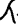 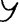 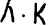 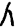 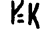 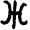
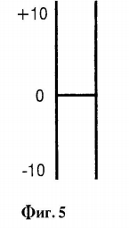 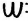 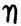 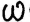 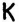 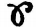 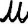 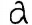 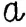 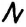 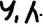 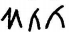 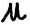 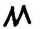 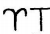 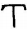
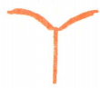 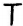 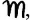
''(След закуска от 11 часа до 15 часа)''
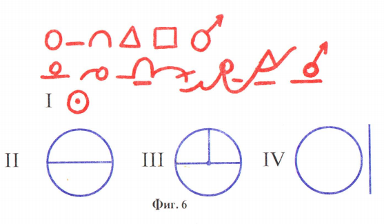 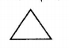
Едно писъмце красиво, изразително и хем се спестява време.
Сега петото писмо ще го разложа. Какво образува този триъгълник? 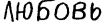 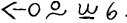 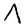 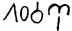
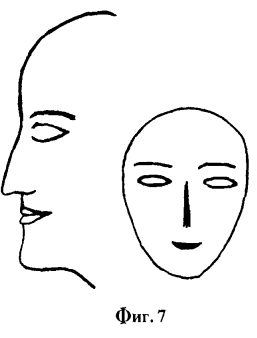
Това са две хиперболи и като се пресекат, образуват елипса - окото (фиг. 8). Значи енергиите, които образуват границите на Божествения свят, са вечни. Човешкото око е затворено (фиг. 9). Значи висшето Божествено око е затворено между две вечни граници. Едната граница е миналото, а другата - настоящето. Имаме слизане надолу - горния клепач, а долният клепач е еволюция - възлизане нагоре. Значи в окото са тези два знака. И във веждите има пак една инволюция. Например пиша ви едно писмо. Пиша го така, но красиво го направя. Какво означава това? Пиша ви за окото как е направено, турям буквите, разпределям знаците. Ето едно писмо - аз го наричам красиво око. Може да туря и този знак отгоре. Това са веждите. Имате едно второ пресичане, имате пак една инволюция; малко по- голяма. И тогава вие ще отговорите така..., хайде това да не ви казвам.
Предметите имат известни качества, които са фиктивни, те съществуват в природата на предметите. Щом се увеличи интензивността на състоянието ви, вие се разширявате, има едно повдигане (фиг. 10). Защото има повдигане, има и понижаване, без вие да сте физически повдигнати от мястото си или пък да сте понизени. Значи на физическия свят няма никакво повдигане, то е духовно, вътрешно нещо. Повдигане и спадане може да стане, без да се образува тази промяна на физическото поле.
Цветът показва състоянието на активността на едно живо същество. Ако е много активно, цветът е червен. Всяка идея е тъй материална както човека. Идеята е едно живо същество, което мисли. Идеята сама по себе си мисли, тя има форма. Ако тече една струя вода, вие с нож може да я пресечете, но ако турите електричество във водата, вие не може да пробиете с ножа, той отскача; и чук ако турите, и той ще отскочи. Та твърдостта почива на друг закон. Представете си един кръг, който има хиляди дупчици и се върти. През тия дупчичи можеш ли да минеш? Не, но ако се движиш с по-голяма бързина, ти можеш да минеш през тия дупчици. Твърдостта зависи от степента на движението. Най-бързо се движат твърдите тела. Божественият свят е твърд. Значи твърдостта зависи от силата на движението. Най-силното движение съставлява най голямата твърдост. Идейният свят е с най- голямата твърдост, с най-голямата бързина. Затова се казва, че Бог отделил твърдта. Абсолютни тела са тези, които дават абсолютна неразрушимост. Твърдите тела дават стабилност. Тъй обяснявам - най-силното движение съставлява най-голямата твърдост. Затова, като влизате в Духовния свят, вие ще вървите по въздуха. Вечният Божествен свят е твърд, той не е житък, не е въздухообразен. Всеки един газ стъпва на една частица и ходи. Вторият човек ще стъпи на светлината и ще ходи. Под думата „твърдост“ разбирам, че движението е абсолютно правилно. Когато двама души се обичат, има сцепление между тях. Никакво събиране няма. Духовният свят започва с деление, в духовния свят събиране няма. В Божествения свят има само процес - деление. А делението вече образува и умножението. С умножението идват на земята изваждането и събирането. А еволюция е събиране, изваждане, умножение и деление. Т. е. Божественият свят започва с деление, а човешкият - със събиране. В природата има една първична материя, която не е диференцирана, тя не се дели. Тя е като едно платно, но сама е неделима. Тази материя е основата на Божествения свят, тя с нищо не може да се видоизмени. Диференцираната материя е разпределена в съзнанието, а има една основна материя, която не е претърпяла никакво изменение. И Духът се обгражда с нея. Тя не се дели. Всички други състояния на материята произлизат от нея. Тази материя, която е неделима, тя има едно свойство: в нея има един малък излишък, тя хвърля този малък излишък и от него се твори видимият свят. Затова казват, че Бог е неизменяем.
За да се прояви умът, трябва да има материя. Всеки човек трябва да работи; има нещо, върху което той трябва да работи. Това, което ти направиш, то е най- ценното за тебе в даден случай. Нещата в Божествения свят нямат повторение. В това седи хубостта. За пример двама души могат да изпеят една и съща песен, но тази песен не е изпята еднакво. Ето къде е разликата - единият е вложил повече чувство. Във всеки певец има една особеност, която той влага в пеенето си. В писанието се казва: „Всеки един човек се отличава по нещо от други- ге.“ Ето разнообразието в природата. И това, по което се отличава човек от другите, което е свойствено само на него, това е човекът.
Аз мога да нарисувам едно хилаво дете и после да го направя стар човек. Тъй също и други рисуват върху вас и ви правят и млади, и стари. (Защо когато човек говори за другите, има физически образ, а когато говори за себе си, никога нищо не си представя?)- Той и за себе си има образ, но той е идеален. Невъзможното за вола е възможно за птичката. В какво отношение? Волът не може да се качи на къщата отгоре, а птичката се качва, защо? Понеже има възможност. Сега где е причината, дето волът не се качва - в господаря, че не го пуска, или у вола, че не може да се изкачи? После един вол не може да влезе в къщата ви, а една муха влиза и хвърчи цял ден вътре. Волът казва: „Човекът не ме пуща да влеза в къщата му.“ А мухата казва: „Аз толкова дни и нощи съм прекарала в къщата на човека.“ Защо? - Защото аз не мога да приема вола в тази голяма форма. Казвам на вола: „Смали се и тогава ще мога да те приема в къщата си.“ Някой казва: „Господ не ми дава да се кача в къщата му.“ Тогава ти си вол. На птичката Господ е позволил да се качва, това не е привилегия. Ако и волът може да се качи, няма да има противоречия. Невъзможността е в самия вол, а не в Бога. В Божествените къщи има известни места, дето Бог не е позволил на вола да ходи свободно. А има и места, дето птиците не могат да идат. Една птица не може да иде 15 километри нагоре, защото ще замръзне. Тя може да се качи 4-5-6 километра нагоре.
Студът и топлината, това са две състояния на енергията, защото цялото пространство е живо. В пространството съществува един космически човек, който изпълва всичко. Някой път в съзнанието си чувствувате, че сте грамадни. Това се дължи на този космически човек, който е грамаден, но се движи толкова бързо, че едновременно е навсякъде. Всъщност той е много малък. Земята е един затвор, а хората мислят, че тук има блага. Колко дни човек е щастлив на земята? То почти живот няма, ако преброите колко часа на ден прекарвате в хубаво разположение на духа. Промени, промени. Сега си радостен и след миг веднага всичко се сгромолясва - дойде най-голямото ти страдание. Падане, качване, слизане, промени, промени... когато няма съзнание. Човек трябва да се възпитава да гледа на смъртта със спокойствие. Ангелът на смъртта иде със страшно лице, но ако ти се предадеш и кажеш: „Да бъде волята Божия“, тогава по-добър от него няма. Този страх е приятен, хубаво е да дойде този страх, да потрепери малко сърцето ти. Ако трепери сърцето ти, това показва, че ти си жив.
Ако човек може да концентрира ума си силно към слънцето, той може да се повдигне с тялото си, накъдето иска. Щом се концентрираш, ти вече действуваш във връзка с това течение. Защото на земята има известни течения, които идват от слънцето и като се свържеш с тях, те ще те повдигнат за където искаш, но абсолютно не трябва да се съмняваш. Най-малкото съмнение ще спре движението на мотора. Има светии, които са изучавали този закон. Като се концентрират, те повдигат телата си. Но като направиш това, никой не трябва да знае. Щом го знаят хората, те ще ти пречат. Никой не трябва да знае, че ти искаш да научиш това изкуство. Има много полезни неща, които може да учите. Светията, като дойде при една голяма река, ще се огледа наоколо и ако няма никой, ще мине през нея. Но ако има някой, той ще чака и ще мине с всички тъй, както и те ще минат, или най-малкото ще влезе във водата и ще я преплува. И като излезе отвънка, дрехите му няма да бъдат мокри, той само ще се изтърси и ще бъде сух. Светията, като влезе във водата, става непроницаем. Туря вещество като гъба и прави дрехите си непроницаеми. Той запълва празнините с пластична, упорна материя. Вие може да направите опит. Направете си една дълга разцепена дреха, която може да се съединява. Сами можете да си образувате магнетическа дреха. И с тази мантия вие ще бъдете запазени от студа, но трябва да концентрирате ума си. Трябва да привлечете тази материя от пространството и да запълните всичките си дрехи с тази първична материя. Но все пак трябва да имате една дрешка. И да е от тънка материя. Тази тънка материя може да я направите топла.
За пример пишеш на приятелката си: „В неделя ще ида на разходка.“ Питам: Така, както й пишеш, умно ли си й писала. Не е умно. Именно неделята не е за разходка. Ще й пишеш тъй: В неделя ще седна сутринта и ще проучвам Библията. Всеки ден е определен за какво трябва да се използува разумно. А в понеделник мисля да почистя къщата. Понеделник е ден за промени, като месечината е той. Във вторник ще правиш сражение, ако има бълхи, дървеници, гъсеници, ще воюваш с тях. Дойде ли срядата, той е ден за интелектуална, умствена работа, през целия ден ще се занимаваш, никакво чистене на къщата. Дойде ли четвъртък, той е ден за себе си. Ще работиш, ще гледаш да внесеш нещо благородно в себе си, да пречистиш вътрешния си живот, да видиш кои от чертите ти са добри и кои лоши. Този ден е за пречистване на аза, на себе си. Петъкът е ден на любовта, ще проявиш любовта си. Съботата е за почивка. Черен е цветът на съботата. Така всеки ден си има работа, съответно определени часове за известна работа. За пример първият час на понеделника е на месечината - ще направиш някаква промяна. И другите часове си имат своя специфична работа. Ако вие учите, както природата ви учи, във всичките часове ще вършите определената си работа, всичко ще върви добре. А сега, като не разбирате това, много работите, но не ви спори. Затова работете малко, да може и малко да свършвате. А в разумния живот малко ще работите, а много ще свършвате. За един час ще свършвате толкова работа, колкото за десет часа. Ще живееш съобразно живата природа, в нея има време, определено за всичко: за миене, за къпане, за че- сане, за мислене, за пеене и т. н., защото работата трябва да бъде разнообразна. Разумно ще работиш. За пример, ако вали, ще идеш ли на нивата с ралото си? Има един метър сняг навън, ще идеш ли с колата за дърва? Не. Ще работиш съобразно с природата. Ще сееш, когато е време за сеене; ще учиш, когато е време за учене; ще чистиш, когато е време за чистене. Ти можеш да не го изпълниш, но всичките разумни хора изпълняват този закон. В природата има програма за всичко. За пример сега прекарвате осем часа в сън. Седем часа са предостатъчни за сън; и то е много. Един час и половина прекарвате в миене, обличане, събличане, два часа за ядене. Колко хитри са хората. Слугата ще иде на нивата да работи, ама през деня си дава много почивки и не можеш да го контролираш.
Два часа физическа работа е достатъчна за човека. Защото ти като му туриш два часа за работа, той ще свърши всичката си работа и шест часа ще му останат свободно време. Ако турите два часа за физическа работа, три часа за духовни занимания и два часа за умствени занятия, така ще направите много повече. Гледаш някой математик смята, смята и почива. Целият ден смята, но колко почива през това време. Или пък някой стане набожен. Целия ден той мисли само, като 10-15 минути помисля за Бога и през останалото време си мисли за своите работи. Та чистата мисъл малцина могат да държат в себе си. Много е мъчно човек да държи дълго време една мисъл в ума си. Все ще смени през деня три състояния най-малко: материално или на твърдата почва, после ще влезе във водата и ще се качи във въздуха. Ще влезе в огъня, понеже е пара, пак въздух, пак вода и пак в твърдата почва. Човек постоянно минава от едно състояние в друго.
Сегашната наука държи за колективния труд на човечеството.
Ето какво означава този чертеж (фиг. 11). Това е човекът, въплотен вече на земята. Казват му отгоре: „Бъди разумен, за да използуват живота, който ти е даден.“ Горната част на котвата представлява неговото око, но и неговият нос. Това са много хубави знаци. Кръстът всякога показва чистене. Тежък е той. Там, където чувствителността е чрезмерна, може да се превърне в мнителност.
Значи, за да се разбират двама души, те трябва да си намерят вълните, по които се движат, и тогава да влизат в съобщение. Всичкото е, щом се нагласиш, чуваш, щом не се нагласиш на вълните, не чуваш.
''Лекция от Учителя, държана на 24 декември, 1924 г.''